OpenRacer documentation
Introduction
OpenRacer is a racing simulation that runs in the browser. It is made of three things that work together: a driving model that simulates the car, a game with races, opponents and menus, and a set of tools to make cars and tracks. This page explains how they work. Where it names files, they are in the fork on GitHub.
The game version is shown in the main menu and at the bottom of the settings menu. It is raised when a car or track made with the game would not work the same on an older version.
Getting started
Playing in the browser
Open openracer.eu/game. There is nothing to install: the game is a set of plain files that your browser runs. Any recent browser with WebGL works. Chrome or Edge is the best choice, because only they have WebHID (force feedback on a racing wheel) and the option to link a folder of cars and tracks.
- Press Play in the main menu and go through the steps: Free drive, Race or Skidpad, then the car, the track, the weather and, for a race, the laps and the opponents. See Main menu and address.
- The last step starts the game. The engine sound starts at your first key press or click, because browsers want that.
- Drive with the arrows or W A S D, or use the touch controls on a phone, or plug in a gamepad or a wheel and press a button so the browser sees it. Esc opens the settings, where you can remap every input and calibrate a wheel. See Keyboard, Gamepad and Racing wheel.
- Press U to tune the car while you drive, and try Skidpad as the way to play to see how much grip a car has.
Your settings, key bindings, lap records, setups and replays are kept in your own browser, not on a server. The same goes for what you make or import: Garage in the main menu keeps your own cars and tracks in the browser, and exports them as zip files (see Your own cars and tracks). Even the car editor and the track editor work on the web version, and save to the garage.
Running your own copy
OpenRacer is a static web app with a small helper server. You need git and python3, and no build step:
git clone https://github.com/WeArtStudioNL/openracer-agent-port.git
cd openracer-agent-port
./start-server.sh # optionally pass a port, default 8000This serves the web folder (tools/serve.py) and opens http://localhost:8000. Nothing is cached, so after a git pull or an edit a refresh is enough and the server never needs a restart. Opening index.html straight from the disk does not work, because the game loads its files.
Any plain web server works too (cd web && python3 -m http.server 8000). The game then behaves like the version on this site, with the cars and tracks listed in cars/index.json and tracks/index.json.
Which one do you need?
| You want to… | Web version | Local version |
|---|---|---|
| Play, race, tune a car, use a wheel or gamepad | Enough | Same |
| Keep your own cars and tracks, pass them on as zip files | Enough, in the Garage | Same, or as folders |
| Try the car editor or the track editor | Works, saves to the garage of your browser | Saves as real files in web/cars and web/tracks |
| Put a car or track in the standard set of a game you host | No: the server of the web version is read only | Yes, the files are in the folders you deploy |
| Keep cars and tracks in git, or send a pull request | No | Yes |
| Save a standard car in the car editor, or record an AI racing line into a track's files | Saved in the garage, as a copy with the same id | Written to car.json and track.json |
| Change the code or the physics | No | Yes: edit and refresh |
| Run the physics bench, the texture and track tools, or the Blender script | No | Yes: they are in tools/ and need Node, Python or Blender |
| Host the game yourself | Not needed | Upload the web folder to any static host |
In short: the web version is enough to play and to make things for yourself. Run it locally when the files themselves matter, to test a change, to develop the game further, or to share a car or track with the project.

Keyboard
Drive with the arrows or W A S D. The steering keys turn the wheels at a rate: fast at a standstill, slower the faster the car goes, and the wheels come back to the middle by themselves when the keys are let go. Esc → Keyboard sets, for the throttle, the brake and the steering, the time a key takes to the full value and the curve of it, how much slower the steering gets at speed, and the steering assist.
| Key | Action |
|---|---|
| Esc | settings menu (the game pauses) |
| Space | handbrake |
| P | parking brake on and off |
| R | put the car back at the nearest point of the racing line, nose forward; the damage and the tyres stay |
| 4 | save the place of the car for R (only on a track without a racing line) |
| Backspace | repair the car where it is, with new tyres and a full tank |
| X / Z | shift up / down (and the selector of an automatic) |
| . | reverse, while held, in an automatic |
| , / . | a motorcycle: the rider back / forward, while held |
| 9 | a motorcycle: the rider goes limp, to try a crash |
| Q, F | two-step and transbrake, while held |
| C, N, B | traction control, ESC, ABS on and off |
| Y, J | two-step on the clutch pedal, launch control on and off |
| T | next camera (follow, cockpit, free) |
| [ ] and ` | turn the camera, put it back |
| O, P | free camera: move with the car, look at the car |
| 5 | start and stop a take |
| F2 | save the picture of the game as a PNG, without the HUD |
| H | HUD on and off |
| V, F3 | telemetry, debug text |
| 0 | debug view (what the physics sees); while it is on, the node grabber is on too (drag a node of the shell with the left mouse button, held by an elastic whose strength is set at the top right; in the same panel Open hinges makes a right click open a hinged part with a small torque and close it again, and Break parts makes a right click break a part loose) and the middle mouse button on the car hits it there (the shell, a tyre, a part that is off the car or a breakable part), as hard as the Hit slider in that panel says |
| E | engine sound on and off |
| U | tuning menu |
| I | start the engine after a stall |
| K, M | calibrate the wheel, wheel on and off |
Some keys do two things. . is reverse in a car and the rider forward on a motorcycle. P is the parking brake, and in the free camera it looks at the car (the free camera goes first). While the free camera is on, its own keys (W A S D, Space, Z, X, Q, E, 3, 4, I, [, ]) move the camera and do not drive the car; the arrows still drive. See Cameras.
All of these can be remapped, see Settings and controls.
Touch screen
On a phone or tablet the game draws touch controls over the picture. They appear by themselves on a touch screen (and with ?touch=1 in the address; ?touch=0 switches them off), so a desktop never sees them. Turn the phone sideways for the most room.

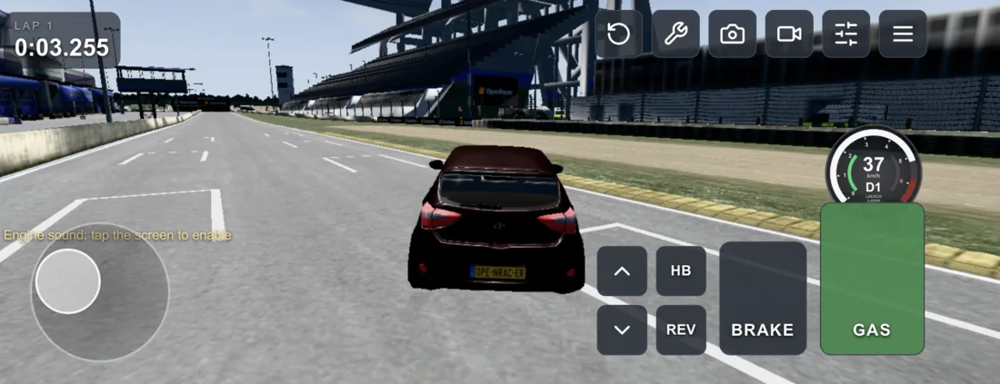
- Steering. Put a finger anywhere on the left half of the screen and a stick appears under it. Move it left or right to steer. The stick follows your finger when it goes far, so your hand never runs out of room. Let go and the wheels come back to the middle.
- Pedals. GAS and BRAKE are on the right, each for a thumb. They build up smoothly, like a pedal and not a switch.
- Buttons. HB is the handbrake, the two arrows shift up and down (in the automatic they move the selector) and REV is reverse while you hold it. At the top are ↺ (the reset), the camera, and ☰, which opens the settings, where Resume brings you back.
Every finger is its own, so you can steer, brake and hold the handbrake at the same time. The steering and the pedals work like a gamepad: the steering gets slower with speed, and the steering assist and its slider in the gamepad options apply. To keep the game running smoothly the picture on a touch screen is limited to about two million pixels, and the anti-aliasing is lighter.
Gamepad
A gamepad steers with the left stick and drives with the triggers. The stick is the steering one to one at a standstill. The faster the car goes, the slower the steering follows the stick, as with the keyboard, so a flick at speed is a small movement of the wheels. When you let go of the stick the wheels return quickly to the middle.
Esc → Gamepad has a slider for how much slower the steering gets (off means one to one at every speed) and the check box Steering assist. With the assist on, the front tyres steer into the slide by themselves when the rear steps out, the way a car with a lot of caster does, so it does not become a spin. It works with and without throttle, and only when driving forwards.
Racing wheel
Wheels with pedals and a shifter work through the browser's Gamepad API.
- Connect the wheel and press a button on it, so the browser exposes it.
- Open the settings menu and press Calibrate the wheel from scratch, or use K. Follow the steps: steering left and right, throttle, brake, and optionally clutch, shift buttons and an H-pattern shifter. Every optional step can be skipped with N, Esc cancels.
- The mapping is stored per device in the browser. The ✎ next to a wheel input measures just that input again.
- M switches the wheel off (keyboard only) and on again.
The wheel steers over its whole calibrated range: a 900 degree wheel gives full lock at 450 degrees each side. Wheel steering range lowers that to 75 % or 50 %. Wheel dead zone sets how much around the middle counts as centred (0–5 %, default 1 %). With both a shifter and paddles mapped, the most recent action decides who is in control. The pedals must come from the same device as the wheel, each on its own axis.
Force feedback
A wheel with force feedback gets the torque a driver would feel, worked out from the physics every frame: the aligning torque of the front tyres (it collapses as they slide, so the wheel goes light in understeer), the bumps of the road, the rumble of grass and gravel, the judder of sliding tyres, the pulses of the ABS, the jolt of a hit and a little shake at idle. It reaches the wheel in one of three ways:
- HID PID, the standard of force feedback devices (PXN, Thrustmaster, Fanatec, Moza, Simagic, Logitech in native mode and most others), through WebHID. The reports are read from the descriptor of the wheel, so no list of wheels is needed.
- Logitech classic protocol (G25, G27, G29, Driving Force) through WebHID. A G29 has to be in its PC (native) mode.
- Rumble through the Gamepad API for a gamepad or a wheel without the above: bumps and slip shake it, there is no torque.
WebHID exists in Chrome and Edge. Choose the wheel once with Wheel with force feedback → Connect a wheel…; after that the game opens it again by itself. The settings menu has on/off, Strength, Centring spring, Damping, Road detail, Direction and a Test button. A PXN wheel has to be in DirectInput mode.
Settings and controls
Esc opens the settings menu and pauses the game. It has a tab for each part:
- Car: another vehicle (when there is no race), traction control, two-step, launch control, ESC, ABS, the drag strip timing, the camera, the reverse of an automatic, and the mirrors. On a motorcycle also the steering, wheelie control, the follow camera and the lean at top speed.
- Keyboard, Gamepad and Wheel: how each input steers and brakes, the wheel range and dead zone, force feedback and the calibration.
- Display and sound: the HUD and its layout (Edit HUD…), units (km/h or mph), the engine volume and the engine sound.
- Mobile (on a touch screen): the finger travel for full lock and the layout of the buttons.
- Graphics: a preset, the picture, light and shadow, tone mapping and the look, the atmosphere (time of day, sun, moon, weather and ground) and the effects (smoke and debris).
- Tools: debug text, the tuning menu, the drag strip Top 50, the racing line and the records of the track, and the surroundings for Blender.
- Controls: the list of all actions with their inputs.
Every action can have several inputs at once: a key, a button or axis of a controller, and a button of a wheel, shown as chips. ✎ sets a new input, ✕ removes it and + adds one. An input belongs to one action: taking it for another action removes it from the first. The bindings are stored in the browser.
The HUD
Bottom right is a round gauge. The ring is the engine speed with a red zone at the rev limit and a shift light that goes orange and flashes at the limiter. In the middle are the speed and the gear (P R N D and the gear of an automatic, or the gear of a manual). The two small arcs are the throttle (green, left) and the brake (red, right). In the gauge are badges for the systems the car has: TC, ESC, ABS, launch control (LC) and two-step (2S). Off, on and working each look different, and a click or tap on a badge switches it. A car without a system has no badge for it. P shows while the parking brake or the P of an automatic holds the car, TB while the transbrake holds it. A car with a boost gauge also shows the turbo pressure. Esc → Display and sound → Edit HUD… moves the parts of the HUD.

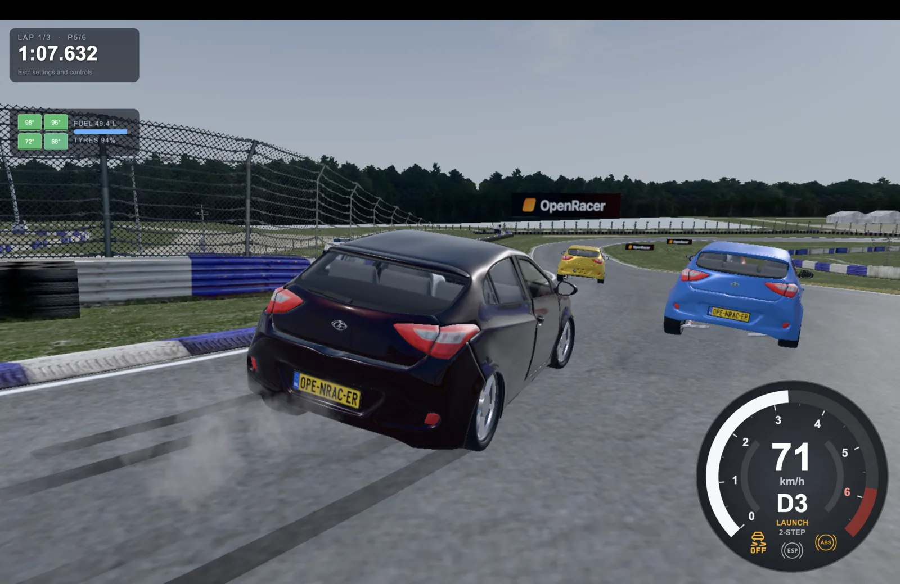
Top left are the lap, the time of the lap that is going and the last laps, the best in green. In a race it shows the lap of the race (LAP 2/5, FINAL LAP) and your place. With wear on, a panel shows the four tyres (colour is temperature, the dark part is wear), the fuel and a PIT hint.
Cameras
T switches camera: Follow, Cockpit and Free. Follow keeps to the direction of the car with a smooth rotation and has a wider field of view the faster you go, while the camera comes closer in the same measure so the car keeps its size and only the sense of speed changes (a dolly zoom). On a motorcycle it can roll with the lean (Esc → Car). [ and ] turn the camera and ` puts it back. The place of every camera is set per car in the car editor; without settings a car gets defaults from its size.
The free camera is not tied to the car. W A S D move it the way it looks, Space and Z take it up, Alt and X down. The mouse looks around after a click on the scene (Esc lets the pointer go). Q and E roll the picture, 3 and 4 make it slower and faster, [ and ] change the field of view. P makes it look at the car, O makes it move with the car, and I fixes it to the car. A panel at the top right has the same toggles, sliders for the speed and the smoothing, and a record button for a take. The camera is remembered per car.
A race
Choose Race in the main menu. The race step sets 3, 5, 10 or 25 laps, the number of AI opponents (1, 2, 3, 5 or 7), their difficulty and damage; More options… has tyre wear and fuel, the ghost, lap records and the cars that may race. The last step chooses the opponents themselves. All of it is remembered. Free drive has no laps and no opponents.
- Start. Everyone is held on the grid, with the brakes on and the engine free to rev, through a 3-2-1-GO countdown. The clocks of the race run from GO.
- Laps. A lap is counted by driving through the gates of the track in order. The first gate is the finish line. Everyone's first lap starts when they first cross it, so a place further back on the grid costs the AI the same distance as the player. On a track with a racing line a lap also counts when a gate was missed but the whole line was driven (within 40 m of it), and the finish line reaches 40 m past the side of its gate: a lap through the pit lane counts.
- Reset. R puts the car back at the nearest point of the racing line. In a race this does not cost a lap, but the lap is not a record and does not make a ghost.
- Finish. An AI car that has done its laps slows down and pulls to the right, out of the way. When you cross the line after your last lap an AI driver takes over your car at half pace, and the results come up: place, best lap and the time of every car with the gap to the winner (a car still on its way is running), with Race again and Main menu.
- No racing line. A track without a racing line has no AI cars: you race the clock. A track without gates has no race at all and opens as free driving. The menu says so.
Replay
From the first frame of the game everything is recorded: all cars, thirty times a second, with their body, suspension, wheels and steering. Press Esc and choose Replay (on a phone: ☰, then Replay). The game stops where it is and the recording is played back with the same code that draws the cars in the game, so the suspension, the steering wheel and the cameras work as they do when you drive.
- Slider. Drag it to go to any moment since the start of the game.
- Buttons. Rewind plays backwards, Pause stops, Play plays forwards, and −10 s and +10 s jump ten seconds. The first and last buttons go to the start and to the end.
- Speed. 0.1×, 0.25×, 0.5×, 1×, 2×, 3× and 5×, forwards and backwards.
- Keys. Enter pauses and plays, the left and right arrows jump five seconds, Home and End go to the start and the end, T switches the camera, H hides the bar and shows it again. Esc or Back to the game returns to the game, which goes on exactly where you left it.
Cameras in the replay
The Camera row of the bar has Follow and Cockpit, the cameras of the game, Free, a camera that you move yourself, and Cinematic, which uses the cameras placed in the track editor: the one nearest to the car, which turns to follow it. Car (or Tab) chooses the car the cameras follow. In Free everything is smoothed and damped, so the camera glides and does not jump.
| Input | What it does |
|---|---|
| W A S D or the arrows | move forwards, left, backwards and right, level, along where the camera looks (the arrows do not jump in time in Free; the buttons do) |
| Shift, Space or Z; Ctrl, Alt or X | up; down |
| mouse | click the scene and look around like a first person view; Esc lets go of the mouse |
| [ and ] | zoom: the field of view narrower and wider |
| F | aim the camera at the car: it keeps looking at it while it moves, and the mouse look rests |
| L | fix the camera to the car: it stays where it is now, relative to the car, and goes with it; L again lets it go |
| Tab | the next car, for F and L |
| controller | left stick moves, right stick looks, the triggers go up and down, the bumpers zoom |
| the slider | 0.01× to 3×: how fast the camera moves, looks and zooms (kept in the browser) |
On a touch screen a finger on the scene looks around; moving needs the keys or a controller.
The replay library
Save replay in the bar keeps the replay in Replays in the main menu, in your browser. When you go back to the main menu with a recording that is not saved, the game asks whether to keep it. The Replays window lists the saved replays with the track, the cars, the length, the date and the size, and has Watch, Edit (the video editor), Download and Delete. Nothing goes to a server.
Download saves a replay as one file (.openracer-replay, compressed), to keep or to send. Someone else adds it with Import replay… in the Replays window and gets the same bar, with the slider and the speeds, but they cannot drive in it. The file holds the recording and the ids of the track and the cars, not their models, so the other one needs the same track and cars. The standard ones of the game are enough. For a car or a track of your own, send them as a zip (the Garage exports one). If something is missing, the game says exactly what. A file from another version of the game is refused with a message, and a damaged one never starts a game.
While you drive the recording is kept in memory, about 4 KB a second for every car, and the last half hour is kept. Without Save it is gone when the page is reloaded. Skid marks and smoke are not recorded: they stay as they were drawn.
Photo in the bar (or F2) saves the picture of the replay as it is now as a PNG, without the bar.
● Video in the bar records the replay from the start to the end as a video file (mp4 where the browser can, else webm).
Takes and the video editor
A take. 5 starts one while you drive. It first asks for the picture (16:9, 9:16 or 1:1), and the take runs with that frame on the screen and a red dot with the time. 5 again stops it, and a window asks for a name and what it should be: a replay (that part goes into the replay library) or a video (that part is played and filmed, and the game goes on). The recorder runs all the time; a take only marks where it starts and stops.
The video editor opens from Video editor in the bar of a replay, or Edit in the Replays window. One replay is the source.
- Left monitor: the source, with In and Out markers (I and O). Insert at playhead and Add to end put that part on the timeline.
- Right monitor: the result, played from the timeline (Space plays).
- Clips: trimmed at their edges, with a speed (0.05 to 8) and a zoom (0.5 to 4), each with keys for a smooth change along the clip.
- Camera track: keys of the free camera, between which the camera moves smoothly, with Parent to car and Point at car. A clip can also have a fixed shot or one of the cameras of the game.
- Save keeps the edit with the replay. Save as replay makes a new replay with the cuts and speeds, and Save as mp4 records the result with the engine sound.

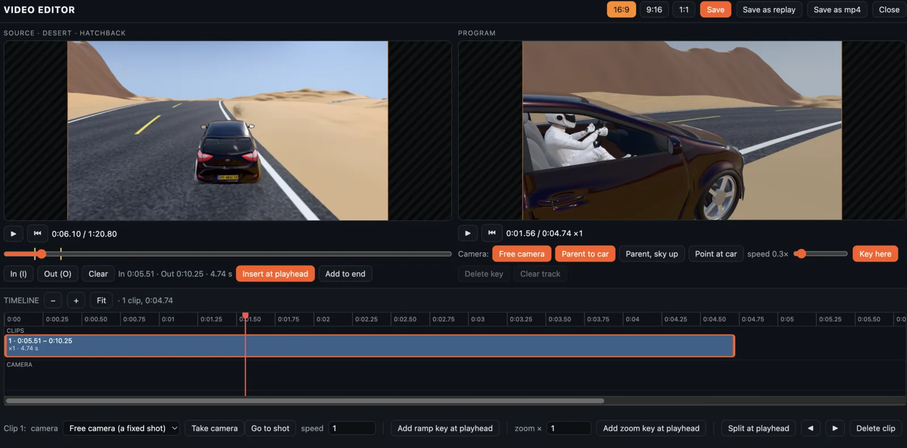
AI opponents
AI cars use the same physics and models as the player (the other cars of the game, in other colours). A driver follows the racing line: it steers at a point ahead on the line (further the faster it goes), keeps to the speed the line allows there, which comes from the curvature of the line with braking for the bends ahead, moves aside for a car in front (it keeps that side until it has passed, and only as far as there is road) and backs off when it is right behind one; of two cars side by side into a bend the one behind gives way. The assists are on and the gearbox shifts by itself. The difficulty is how close to the limit of the tyres it drives. The limit is the grip that the skidpad measured for that car with that setup; a car that was never on the skidpad gets a guess from its tyres, and learns the track as it goes. To keep the frame rate up an AI car drives on a simple tyre (rays and a slip curve), not the shell of nodes of the player's tyres. The cars bump into each other and dent each other, and the HUD shows the place from how far along the line everyone is. An AI car that crashed or got stuck is put back on the track, repaired, a little further along the line.
The racing line is the best lap that was driven on the track in this browser, by anyone, if there is one. Else it is racing_line in track.json, else the middle of the road of a drawn track. So on a track from Blender it is enough to drive one lap and the AI can race from the next start. The track editor can record the line: Record AI racing line opens the game with the track, you drive a calm lap through all gates, and Esc saves the last lap as the line and returns to the editor.
Ghost and records
The ghost is your best lap with this car on this track, driven again as a see-through car while you drive. The lap that is going is recorded thirty times a second and kept when it is the best. Lap records are kept per track and car in the browser and shown in the menu and the HUD. Esc → Tools → Records of this track can forget them.
Tyres, fuel and pit stops
With Tyre wear and fuel on, a tyre has a working window of about 70–100 °C. Cold it grips less, overheated too. It warms from sliding and from flexing under load, and cools with the air that passes. It wears with the sliding, faster when overheated, and a worn tyre grips less. A set of slicks lasts about 25 to 45 laps of hard driving, road tyres longer; Fast wears three times as fast, for a short race. Fuel burns with the power of the engine, so the car gets lighter as it goes, and an empty tank stops the engine. The size of the tank (60 L by default), the use, the heating and the life of the tyres are in car.json and in the tuning menu.
A pit stop is made by standing still in your pit box, a box of 4 by 8 m placed in the track editor (box 1 is the player's, the next ones are for the AI cars in the order of the grid). A track without boxes uses its pit lane, a surface of the track: stand still on it (inside the pit area, when the track has one drawn). The tank is filled at 6 L/s and, when the tyres are worn past 15 % or one leaks, new tyres go on, which takes longer the more worn they are (2.5–7.5 s): only the tyres that are worn past 15 % or leak are changed, one after the other, and you see each wheel come off and the new one go on. The two happen side by side, so the stop takes as long as what is needed, with a moment to lift and drop the car. With Damage on the stop repairs the car too: the dents (longer the deeper they are), every part that came off and every bent wheel add to it (at most 10 s), the dents go out bit by bit while the car is on the jacks, the parts and wheels that came off fade from the track while the car goes up and are then put on the car one by one, as the tyres are (each comes in from the side and into sight), and when it is done the car is whole. A replay shows the stop as it was. Your car goes up 10 cm on the jacks and you cannot drive while it is serviced; the count down is in the middle of the screen, and when it is done the car drops on its wheels and you drive on (GO). The AI pits too, when its tyres are worn or its fuel will not last the laps that are left, and drives the pit lane at a walking pace, along the pit line of the track editor when there is one. A track without pit boxes or a pit lane has no stops.
Weather and time of day
The weather step of the main menu, and Esc → Graphics → Atmosphere while you drive, set three things. The sky is made by the game from them, the same on every track.
- Weather: clear, cloudy, fog, rain or snow. Rain and snow fall past the camera.
- Time of day: dawn, morning, noon, afternoon, evening, sunset, dusk or night, and an hour slider in the Graphics tab. The sun rises at 5:00, is highest at 12:00 and sets at 19:00. At night the moon gives a faint light, after its phase. There are no headlights yet, so the night is dark.
- Ground: follows the weather, or dry, wet or snow. Rain wets the road within a minute and it dries again in a few minutes after. Snow builds up while it falls and stays. A wet road has less grip, snow a lot less, for you and for the AI, which drives slower.

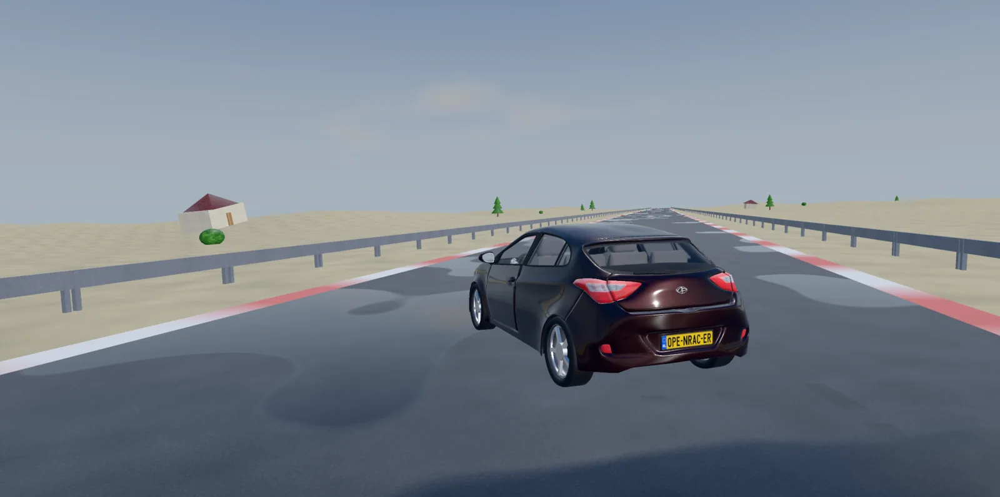

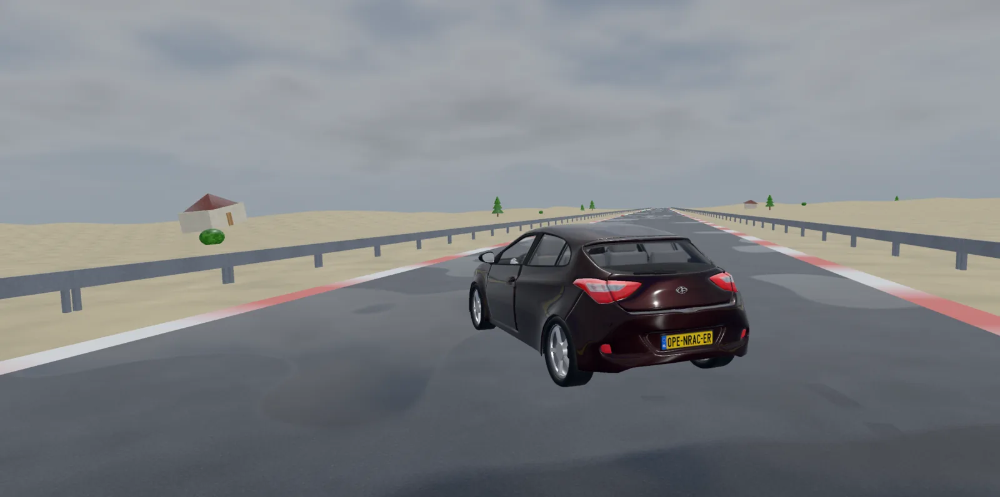

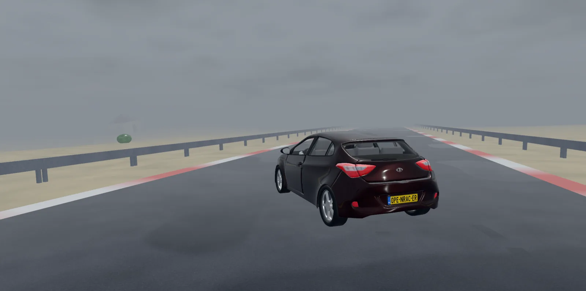

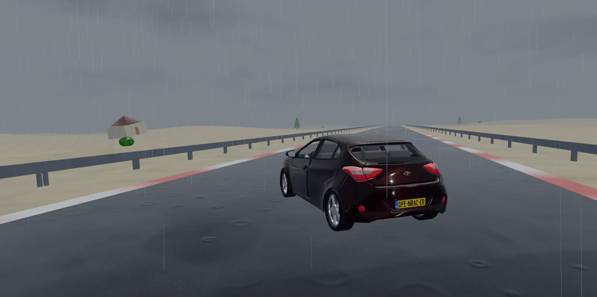

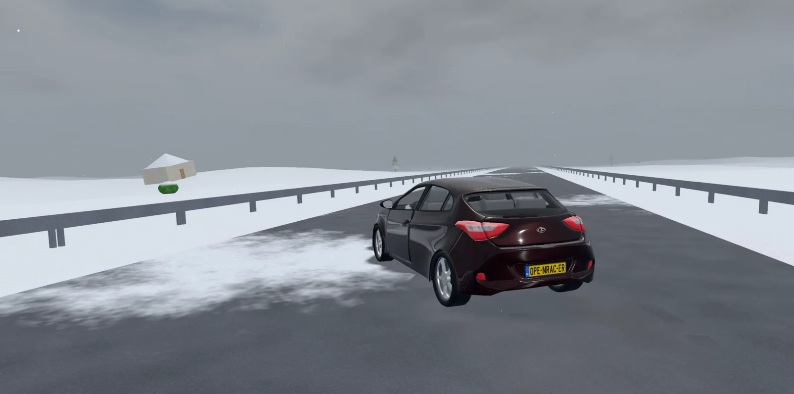

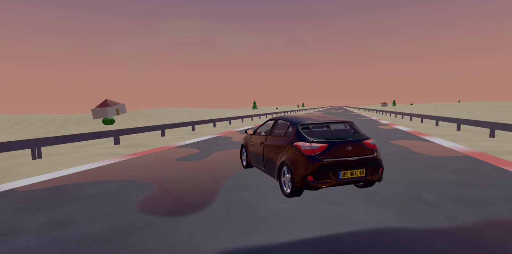

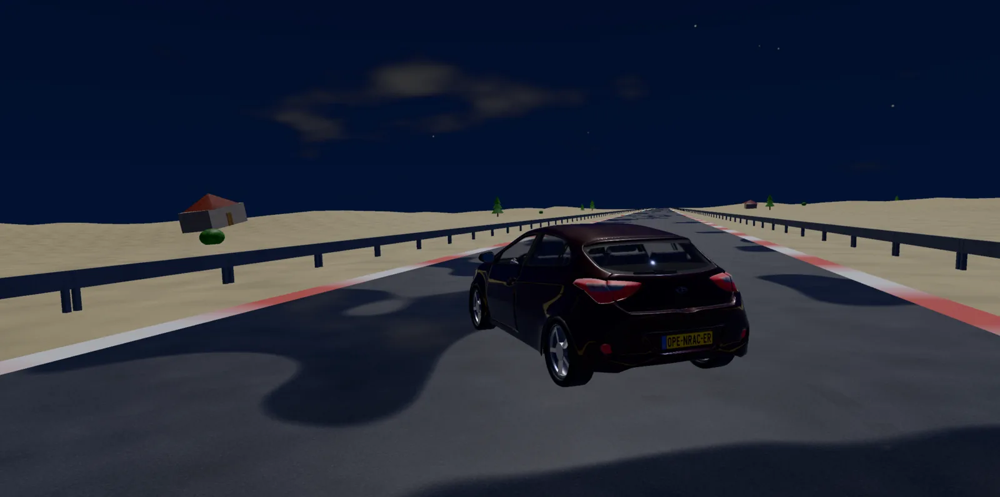
Drag strip
A track can have a drag strip, placed in the track editor (Drag strip: the start line, the direction and the distance, from 1/8 mile to 1 mile or your own length). None of the tracks that come with the game has one yet.
- Staging. Near the start line a text shows how far the front wheels are from it. With the front wheels at the line and the car still, "Get ready" shows (time for the two-step), then the lights on the tree: stage, three ambers and green. The timing starts when the car leaves the line; the reaction time is measured from the green.
- False start. Leaving before the green is a red light: the run is over, and the car has to go back behind the line and come up slowly again.
- Time slip. The times and speeds at 60 ft, 330 ft, 1/8 mile, 1000 ft, 1/4 mile and so on, as far as the strip goes, are shown at the end on a time slip.
- Top 50. The best runs per distance in this browser, with the car, the times, the top speed and the ticket of each run. Open it with Drag top 50 on the track in the main menu, or Esc → Tools.
For a launch there are the two-step (Q), the transbrake (F) and launch control (J). Esc → Car sets how long "Get ready" shows and how long the lights stay after the green.

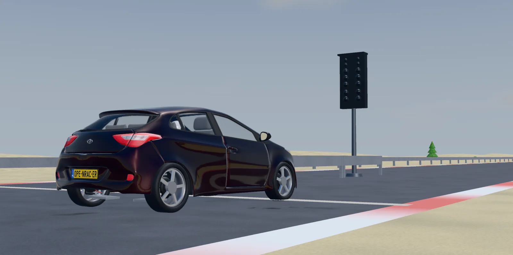

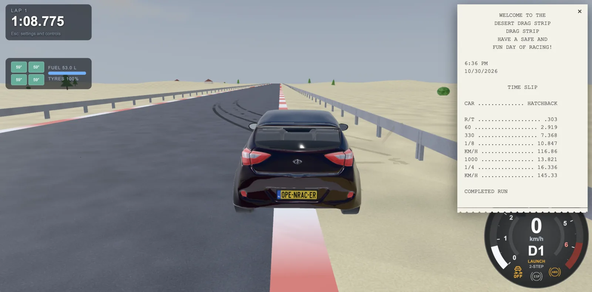
The driving model
The car is simulated after the architecture of Programming vehicles in games, in a few files without 3D dependencies (Vehicle.js, Wheel.js, Ground.js). It has three parts that are coupled: the chassis, the tyres and the driveline. Weight transfer, understeer and oversteer are not scripted: they follow from the springs, the height of the centre of gravity, the tyres and the accelerations.
Chassis
A rigid body in 3D: position, orientation, velocity, angular velocity, mass and the inertia of a box. It pitches, rolls, can jump and can turn over. Gravity, air drag, downforce or lift and the forces of the four wheels act on it. Hits reach it through the soft body on it, the shell that dents.
- Aerodynamics. Downforce or lift per axle (
downforce_front,downforce_rear, negative for lift). It presses at the axle, so the balance of the car changes with speed. - Steering. The front wheels steer with Ackermann (default 0.6): the inner wheel turns more than the outer one, so a slow bend does not scrub the inner tyre.
- Roll centres. The force across the tyre acts at the roll centre of the axle (a height above the road). The part of the load transfer below the roll centre goes through the linkage at once and presses the outer tyre down; only the rest rolls the body on its springs.
- Anti-dive, anti-squat and anti-lift. The same for the brake and drive forces: a share (in %) of the force along the tyre is taken by the linkage, so the body pitches less on its springs, and that share of the load transfer goes to the tyres at once. The total load transfer stays the same. Anti-dive is the front under the brakes, anti-squat the rear under power, and anti-lift the rear under the brakes and the front under power (front or four wheel drive). They are in the Chassis group of the tuning menu and in
chassisof car.json (anti_dive,anti_squat,anti_lift_front,anti_lift_rear, 0 to 1); 0 when not set. A motorcycle has the geometry of its fork and swingarm instead.
Suspension
A quarter car at every corner. The wheel with its tyre, brake and hub is a mass of its own (unsprung mass, 35 kg by default) that hangs on a spring and a damper, with an anti-roll bar, and stands on the tyre. The tyre finds the road itself with its nodes (see Tyres), so it touches a kerb where it reaches it first and rolls on gradually.
The road pushes the tyre in, the tyre pushes the wheel, the wheel pushes the spring, the spring pushes the body. A sharp bump reaches the body through the spring and a digressive damper, whose force grows only slowly past a knee, like the blow-off of a real damper, so a kerb is a thump and not a blow. Past the travel there are damped bump and droop stops.
| Setting | What it does |
|---|---|
spring_front/rear | spring rate at the wheel, N/m |
damping_front/rear | damping ratio |
roll_front | the front share of the roll stiffness |
suspension_travel | travel before the bump stop, m (default 0.09) |
ride_front/rear | ride height per axle; both together give rake |
camber_front/rear, roll_camber | static camber (degrees) and the share of the roll of the body on its springs that the wheels lean with |
toe_front/rear | toe per axle; positive is toe-in |
Tyres
The tyre of the player's car is a shell of nodes (TyreShell.js). An outer shell of free nodes is the tread and the shoulder; an inner shell follows the rim. Beams join them: cables from the tread to the rim that the air pressure keeps taut, belt springs round and across the tread, and a bump stop deep in. The air pressure pushes the tread out and the rim back. The nodes are tested against every triangle of the track, and a node on the road holds it with a bristle, a spring up to the friction of the surface. So the grip, the combined slip, the patch and the way a tyre lets go come out of the nodes; there is no slip formula. The debug view (0) draws the nodes and beams, and the tyre of the model is pushed in as far as the nodes are. The AI cars use a simpler tyre, see AI opponents.
- Size and rubber. The width, the diameter and the height of the sidewall come from the tyre. A wider or bigger tyre grips more at the same load and turns in sharper. The rubber is a slider from eco and road tyres to race and drag slicks: it sets the grip, the temperature window, the heat, the wear and the rolling resistance.
- Load sensitivity. A tyre grips less per newton the more it is loaded, so a car carrying weight on one axle loses grip there.
- Pressure (bar, 2.2 by default). It sets the patch and how far the tyre goes in. A softer tyre has a longer patch and its sidewall folds more. A hard hit can puncture a tyre, which then loses its pressure.
- Camber. A wheel that leans pushes towards the side it leans to.
- Toe. Toe-in calms the rear; toe-out at the front sharpens turn-in.
- Temperature and wear. See Tyres, fuel and pit stops.
- Surfaces. Road, pit lane, grass, gravel, sand, mud and ground each have their own grip, and rain and snow take some away. Loose ground throws up pieces of grass, sand, gravel or snow.
Driveline
Engine (with inertia, idle, rev limiter and stalling) → friction clutch → gearbox → differential → wheels. The clutch can only transmit a limited torque, so it grips, slips or slides depending on the pedal and the load. Each wheel is an inertia whose speed follows from the engine, brakes and tyre, so wheels can spin or lock.
- Drive is rear, front or all wheels.
- Differential between the wheels of an axle: open (equal torque, so the wheel with the least grip decides), lsd (a preload plus a share of the driven torque under power and off the throttle) or welded (both wheels always at the same speed). An all wheel drive car also has a centre differential (open, lsd or locked) and a torque split.
- Engine build. The torque curve follows from the engine that is built in the car editor or the tuning menu: the block, bore and stroke, compression, cam, valves, fuel, and a turbo or supercharger. Run dyno measures it.
- Turbo. A boost pressure with the spool time that is its lag; the heat of the compressed air and the intercooler count.
- Shift time. A shift takes time in which the clutch is open.
- Without a clutch pedal the car works the clutch itself, so it does not stall. With a clutch pedal on a calibrated wheel the clutch is yours: release too quickly and it stalls, dump it at high revs and the tyres spin.
Gearboxes
The gearbox of the car decides how it is shifted. There is no gearbox-mode key. It is set in the Drivetrain card of the car editor and of the tuning menu (drivetrain.gearbox):
- Manual (
gears) - The gears are 1, 2, … with N and R below 1. The shift keys and paddles change the gear and an H-pattern shifter selects it. With a clutch pedal on a calibrated wheel the pedal is used once it is pressed or the shifter is moved; after the paddles the clutch is automatic again.
- Manual with an automatic clutch (IMT,
imt) - You shift as with a manual, but the clutch is never a pedal.
- Automated manual (AMT,
amt) - The gears of a manual, shifted by a robot: slowly, with the power off.
- Dual clutch (DCT,
dct) - The next gear waits on the other clutch, so a shift is a quick hand-over in which the drive never stops.
- Automatic with a torque converter (
torque-converter) - A fluid coupling in place of the clutch: it multiplies the torque off the line, locks up at speed, keeps the drive through a shift and lets the car creep at idle.
- CVT (
cvt) - No gears: the ratio moves smoothly to hold the engine at the speed the throttle asks for.
The automatics (AMT, DCT, torque converter, CVT) have the selector P R N D: the shift buttons move it (P and R only at a standstill), . is reverse while held, and in P the wheels are locked. In D the brake key held at a standstill also reverses (Esc → Car). The automatics with gears have a shift pattern: Normal, Sport (holds the gears longer), Drag (up at the rev limiter, no kick down) or Manual (you shift with the paddles or the keys).
Transmission in the Drivetrain card of the tuning menu sets a whole gearbox at once, with its gears, reverse, shift time and converter: 5 and 6-speed manuals, a 6-speed sequential, a 7-speed dual clutch, a 6-speed automated manual, 3, 4, 6 and 8-speed automatics, and drag automatics with 2 or 3 speeds. − and + beside the gear ratios change the number of gears.
Traction control, ESC and ABS
- Traction control only looks at the wheels. When a driven wheel turns faster than the road under it, power is taken off the engine until it grips again.
- ESC compares what the driver asks for with what the car does. The steering angle gives the direction the car should turn at that speed; the yaw rate and the direction of movement show what it does. When it turns more than asked (oversteer) the outer front wheel gets a short brake. When it turns less (understeer) the inner rear wheel is braked. Both take power off. The steering itself is never changed. The understeer gradient is worked out from the weight on each axle and the tyre stiffness, so a nose-heavy car is not read as oversteering when it only turns the way it always does. With ESC off the car slides when it asks for more than the tyres have.
- ABS keeps the wheels from locking under braking. Brakes are set per axle, in the tuning menu as a total and a brake bias, the share to the front.
3D contact and collisions
Every triangle of a track is kept in a 3D grid. The wheels feel the road with rays along the axis of their suspension, so a car can drive up a wall, upside down, or over a bridge, as in a loop. The body of the car is a cloud of spheres, made from its model when the car is made, that is tested against the triangles: a surface that the car rides on is a damped spring, any other surface is a wall that the car is pushed out of. A wall that is lower than the kerb height above the underside of the car is driven over.
Every track uses this physics. The older 2D physics (one height of the road per place) is gone.
Soft body and damage
Every car is a soft body (SoftBody.js, see SOFTBODY.md in the repository): a shell of nodes and beams in the frame of the car, made from its model. A node is held to the frame by a spring that gives way past a yield force and stays bent, and tears off at its break force; the beams between the nodes work the same way. Hits act on the nodes, and the car feels them through the shell, so the energy of a crash goes into the bending.
- Dents. The shell dents and keeps the dent, and the model is bent with it. Two cars dent each other.
- Parts. Doors, the hood, the boot lid, bumpers, mirrors and wings can hang on hinges, swing, come loose and fall off. They are set in the Soft body card of the car editor. A part that is in another part in the model (the glass of a door, a holder on a bumper) goes with it, and while that one swings or falls its load is measured against it: a holder breaks off when the bumper lands hard.
- Breakable parts. Glass, lamps and mirrors can shatter: at their force they are gone, and in their place are pieces that fly, tumble, bounce and lie on the road for a while, and a cloud of particles (shards, splinters or grains of glass, plastic or chrome, or a colour of their own). The pieces are the faces of the part (in clusters), or the pieces of a hidden object of the model with the name of the part and
_brokenafter it (a copy cut into pieces, in Blender for example with Cell Fracture). An object whose name ends in_brokenis never seen and is not a part of the physics. A replay shows the pieces and the particles as they were. In the window of the part: Breakable only, then Breakable: it shatters. - Wheels. A hard hit can bend a wheel, tear it off, or puncture its tyre.
- Repair. Backspace repairs the body, the parts, the wheels and the punctures, and puts the car on its wheels where it is, with new tyres and a full tank.
- Off. Damage in the main menu (free drive, the race step, the skidpad,
&damage=0) makes every car a plain rigid body: nothing dents, comes off or punctures. The car still lands on its roof and bumps into the others, and it costs less.
The damage is in the replay and in a saved replay file too.
Motorcycles
A vehicle with "type": "motorcycle" in its car.json is a motorcycle (Motorcycle.js, see MOTORCYCLE.md). The game has two: the Sports motorcycle 600cc and the Supermoto 700.
- Steering is leaning. The steering keys, the stick or the wheel ask for a lean, and the rider takes it with a short delay. The front wheel is steered to the bend that lean needs at this speed, with a short countersteer to start it. Esc → Car chooses lean only or countersteer and lean, and the lean that is left at top speed.
- The rider is a model with arms and legs that follow the bars and the pegs. He is part of the mass and moves on the bike: back on a hard brake, flat on the throttle, off the seat in a bend. , and . move him back and forward while held.
- Wheelies and stoppies. The front brake is let off as the rear wheel lifts, and wheelie control rolls the throttle off as the front wheel lifts (Esc → Car).
- A crash. The rider is thrown off as a ragdoll. 9 makes him go limp, to try it.
- Camera. The follow camera rolls with the lean, or stays level like the one of a car (Esc → Car).
A car can have a driver too: the Driver card of the car editor places a model in the car, with its hands on the steering wheel and its feet on the pedals.

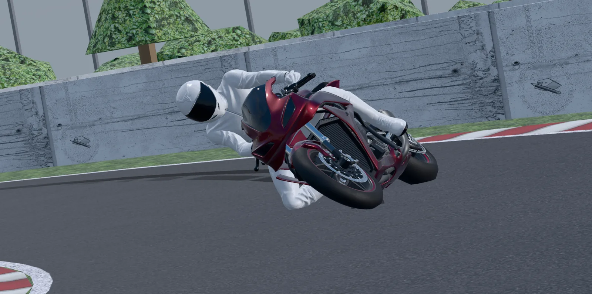

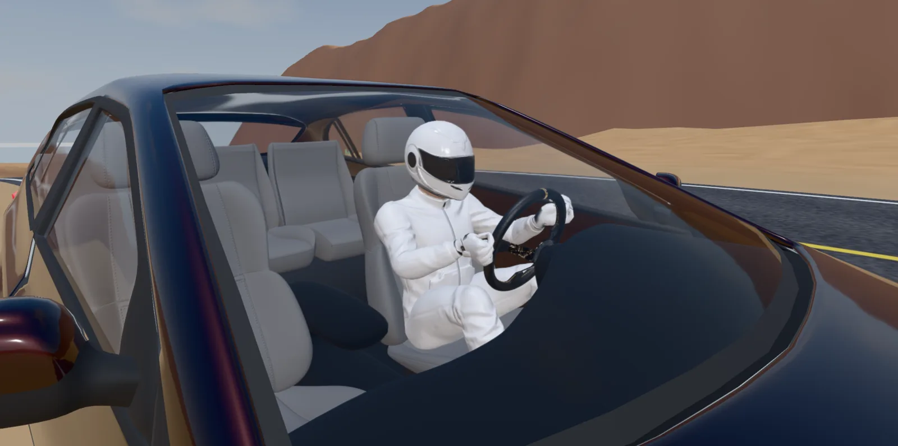
Skid marks, smoke and collisions
Skid marks. A tyre that slides past the peak of its grip at some speed leaves a strip of rubber along the path of its contact patch, darker the harder it slides (black on the road, lighter on grass and dirt), for the player and the AI alike. One mesh holds about a kilometre of marks in a ring; the oldest are drawn over when it is full.

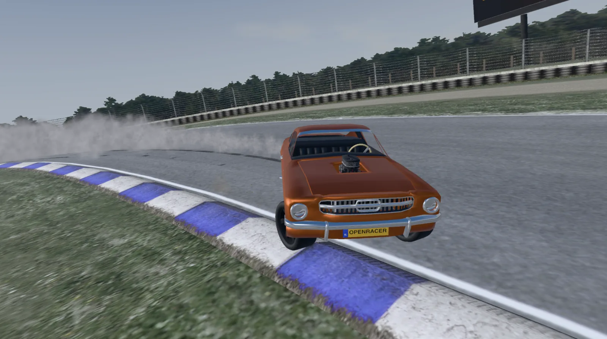
Smoke and squeal. A sliding tyre makes smoke, and the longer it slides the hotter it gets and the thicker the smoke. On grass it is dust. The squeal is made by the game and follows the car in pitch and volume; a recording in sounds/tyre-squeal.ogg (or .mp3 or .wav) replaces it. It comes from the physics, so it also shows with locked wheels, wheel spin and drifts.
Collisions. The car collides with walls, fences, buildings, steep embankments and the other cars. The body is the cloud of spheres and the shell of nodes of 3D contact and Soft body: a hit acts where it hits, so it stops the car, dents it, bounces it a little and spins it when it hits with a corner. Things lower than 30 cm, like kerbs, are driven over. Barrels, boxes and cones in a track can be knocked over.
Engine sound
The sound is calculated, not played from a loop. It is a port to JavaScript of the parts of engine-sim (Ange Yaghi, MIT) that make the sound, running as an AudioWorklet. The gas in every cylinder is simulated: its volume follows the crank, the valves open with the lobes of the camshaft, the mixture is lit by the spark and burns, and the exhaust runners and collector are volumes of gas too. The cylinders are added in firing order (a crossplane V8 burbles because two cylinders of one bank fire after each other), processed by a synthesizer and convolved with the recorded impulse response of an exhaust. The ignition cut of the rev limiter leaves unburnt mixture that bangs in the hot exhaust. It is duller in the cockpit view.
The sound of a car is sound.engine_sim in its car.json. The car editor has presets (inline 4 to V12, boxers) and a live preview, and the tuning menu changes the main parameters while you drive. A V8 costs about a fifth of a processor core at the default 10 kHz simulation rate; lower simulation if the sound stutters. The sound starts at the first key press or click, because browsers want that.
Tuning menu
U shows or hides the tuning menu, with which the car is changed while it drives:

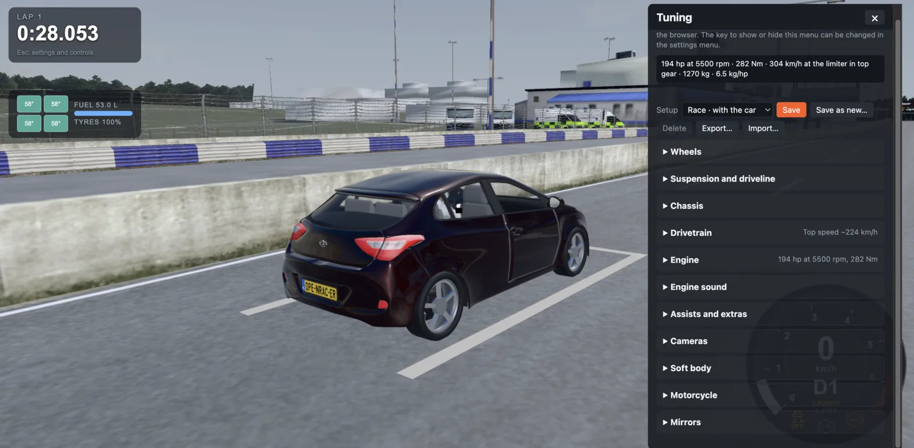
It has the cards of the car editor, with the same names and in the same order (one list for both, OpenRacer.CarTuning.CARDS), so the two always agree:
- Wheels: the rims and tyres per axle, size, rubber, pressure, heating and life.
- Suspension and driveline: the type of suspension per axle and where the engine is.
- Chassis: paint, mass, weight distribution, centre of gravity, springs, dampers, travel, ride height, camber, toe, roll centres, anti-dive, anti-squat and anti-lift; the brakes and their bias; drag, downforce and steering; the size and the steering wheel.
- Drivetrain: the transmission, the gearbox, every gear, the final drive, the clutch and the differentials. It shows the top speed.
- Engine: the fuel, and the engine build with its chart and Run dyno. It shows the power.
- Engine sound, Assists and extras (traction control, ABS, ESC, launch control, two-step, pops and bangs, anti-lag, boost gauge), Cameras, Soft body (shown as the car has it: the shell, the dents, the strength of the wheels and the parts are the car's, set in the car editor with Default chosen), and for a motorcycle Motorcycle. The game adds Mirrors.
Only the settings that apply are shown. A value that differs from the chosen setup is orange, and its ↺ goes back to the car as it was made. The tuning of a car is kept in the browser. To keep a tuning under a name, see Setups.
Setups
A setup (or tune) is the whole car as it is tuned, kept under a name in this browser. The top of the tuning menu has the list of setups, with Default (the car as made), which is car.json:
- Save overwrites the chosen setup with the car as it is now. Save as new… asks for a name. With Default chosen, Save overwrites
car.jsonwith the car as it is tuned, after a question; this works only with the game's own server (tools/serve.py) on your computer, not on the site or for a car in your garage. - Delete removes the chosen setup.
- Export… saves it as a file to share, and Import… makes a setup of a file of someone else.
A car with setups gets a Tune step in the main menu, and an opponent can race with a setup too. The car editor has the same list at the top: its Save writes to the setup that is chosen, and Default writes car.json.
Setups that come with a car. A car can bring its own setups, for everyone who plays it: tune files next to its car.json, listed in it as "tunes": ["race.openracer-tune.json"]. In the lists they say with the car. Save keeps your own copy in the browser, and Undo changes goes back to the setup as it comes with the car; it cannot be deleted. In the car editor, Tune file → Ship with the car writes the chosen tune next to car.json and adds it to the list, and Take off the car removes it again. A tune file exported with Export… works too: put it in the folder of the car and add its name to "tunes".
Skidpad
Skidpad, a way to play in the main menu, asks for the car and the ground (asphalt, wet asphalt, grass, gravel, sand or mud, each with its grip), takes the car to a round pad with a painted circle of 50 m radius and drives it round by itself. The steering holds the painted line, a steady throttle raises the speed slowly, and the lateral acceleration is read from the tyre forces while the car still follows the circle. When it lets go, by going off the line or sliding, or when it understeers wide and cannot go faster, the result comes up: the g it held and the speed. Then you can press Reset to run again with the tuning as it is now, Tune to open the tuning menu, or Back to the menu. ESC is off for it. The result on asphalt is kept for that car and setup, and the AI drives the bends with it (not after the tuning menu was opened during the run: save the setup and run it again).

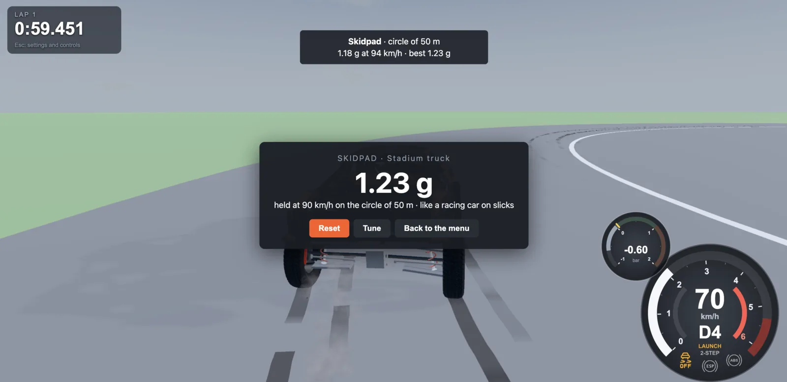
Physics bench
node tools/physics-bench.js runs the physics of every car without the browser on a flat road and measures what a road test would: 0–100 km/h and 0–60 mph (traction control off and on), the braking distance from 100 km/h and from 60 mph, the top speed, the most lateral acceleration on a skidpad, the understeer gradient at 60 and 120 km/h and the share of the load transfer taken by the front axle. The bench runs on a flat road with the triangles the tyre shell needs. It has reference figures of a real car only for the Mustang Mach 1, which is no longer in the game, so for the cars of today it prints the figures without a comparison. node tools/physics-bench.js <id> runs one car, --json prints the figures. Run it after a change to the physics or to a car.
Making a car
cars/<id>/car.json describes a car: the model, the size, the chassis (mass, wheelbase, tracks, weight distribution, height of the centre of gravity, tyre diameter, drag, steering lock), the drivetrain (drive, gear ratios, reverse, final drive), the engine (idle, rev limit, inertia, torque curve as [rpm, Nm]), the brakes (Nm per wheel), the cameras, the sound, the tyres, the soft body and, when it has one, the driver. The game comes with seven: go-kart-250cc (Go-kart 250cc), hyundai-i30 (Hyundai i30), openracer-kart (OpenRacer Kart), openracer-muscle (OpenRacer Muscle), sports-motorcycle-600cc (Sports motorcycle 600cc), stadium-truck (Stadium truck) and supermoto-700 (Supermoto 700). The tracks are the Circuit, the Desert (3.8 km with eight jumps), Kartbaan Oldenzaal, TT Assen and the Skidpad.
The model is a glTF or glb file, for example from Blender. Its materials are used as they are (physically based: base colour, metalness, roughness, normal, occlusion and emissive maps, clearcoat, transmission) and lit by the surroundings of the car, so paint, glass and chrome reflect the track and the sky. A part called steeringwheel turns with the steering (steering_wheel.degrees, 450 by default). Draco and Meshopt compression are not supported.
Car editor
At tools/car-editor.html. Open it from the Garage in the main menu: New for a new car, Load to open one. With the helper server it writes the files to disk, without it it saves to the garage. The cards on the left are the cards of the tuning menu, plus the model, the materials and the driver. The list of setups is at the top.

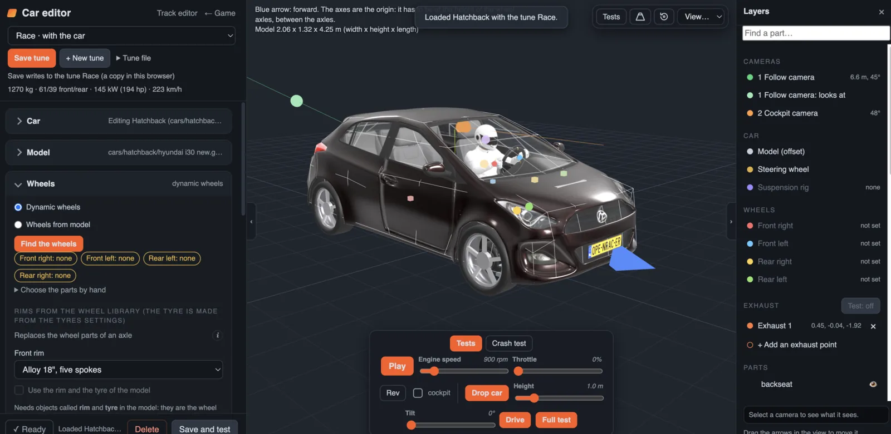
- Pick the glb. The arrow is the front of the car. Turn the model if needed and press Fit: the origin has to be at the height of the wheel axles, in the middle between the axles.
- Wheels. The wheels have to be separate parts, because they steer and spin. Find the wheels does this by their names and places. Or take a rim from the wheel library per axle, with a tyre made from its numbers (width, diameter, sidewall, rubber), or the objects
rimandtyreof the model. - Suspension and driveline. A suspension per axle from the parts library (double wishbone, MacPherson strut, live axle on trailing arms or on leaf springs), or the parts of your own model, and where the engine is. See Moving suspension.
- Paint. The colour, the finish and the flakes of the body and the rims, in the Chassis card.
- Engine. Build the engine: the block, bore and stroke, compression, cam, valves, fuel, a turbo or supercharger. Run dyno measures the torque curve on rollers. The engine sound follows the build.
- Cameras. The Layers panel lists the cameras, the model and the wheels. Drag the gizmo in the view and a thumbnail shows what the camera sees, live.
- Materials. A shader the exporter does not know, such as many glass shaders, arrives as opaque white metal. The Materials card lists the materials and sets them right with a preset (glass, car paint, chrome, rubber, plastic, brushed metal) or by hand, with a live preview.
- Soft body. Show the shell draws the nodes and beams made from the model; set the material and the strengths, add or move nodes, and set the parts that swing on hinges or come loose.
- Driver. Load a driver model and place it, its hands on the steering wheel and its feet on the pedals.
- Updating a model. Choose the car and pick the new glb: the transform, the wheels and the material changes are kept where the new model still fits, and the editor says if the wheelbase, track or tyre differ.
- Save the car. It is written to
cars/<id>/and is in the main menu. Save and test saves it and starts the game with it: choose the track, the weather, the time of day and the ground, or use the last settings.
Test bench
The bottom bar of the view has a test bench that runs the model with the physics of the game, with the suspension rig and the soft body:
- Drop car lets the car fall on its wheels from a height, with a Tilt so it lands on one wheel first.
- Drive lets you drive the car over the floor with the keyboard. Reset car or R puts it back.
- Full test runs a drop, the engine to the rev limiter, a metre forwards and back, the steering to both locks, and then full throttle into a wall ahead.
- Crash test drives the car into a wall at a speed and an angle you set, or fires a push at the car where you click (Apply force), to see how it dents.
Moving suspension and steering
Optional. A model without these parts is shown as before, and the physics does not change. Parts of the model with these names move with the suspension and the steering of the physics. The corner is FL, FR, RL or RR at the end of the name. Model the car at rest on its springs, keep every part a child of the body (not of a wheel), and remember that a part's origin is its pivot.
| Name | What it is | Origin (pivot) | What it does |
|---|---|---|---|
susp_upperarm_FL, susp_lowerarm_FL | wishbone or link | the hinge on the chassis | swings about the axis along the car; its free end reaches the wheel |
susp_upright_FL | hub carrier, knuckle | middle of the wheel | goes up and down with the wheel and turns with the steering, does not spin |
susp_spring_FL, susp_damper_FL, susp_strut_FL | spring, damper, strut | top mount on the body | points to its other end and gets shorter and longer |
steer_rack | steering rack | anywhere | slides across the car with the steering |
steer_tierod_FL | tie rod | end on the rack | its other end follows the upright |
susp_axle_rear | live axle | its middle | goes up and down with its wheels and rolls with the difference |
susp_trailingarm_RL | trailing arm | hinge on the chassis | swings about the axis across the car |
susp_panhard_rear | Panhard rod | end on the chassis | its other end follows the axle |
susp_driveshaft_RL | half shaft | at the differential | swings and stretches with the travel |
brake_caliper_FL | brake caliper | anywhere | goes with the wheel and steers with it, but does not spin |
The repository has an example, web/examples/suspension-rig.glb, a test car with all of this named and pivoted the way the game wants it. In Blender: set the origin of each part to its pivot (Set Origin → 3D Cursor), keep the parts separate objects under the body, apply rotation and scale, and export with +Y up.
Making a track
A track is tracks/<id>/track.json with its files. There are two formats: the old one of the demo track, and a glTF/glb model with:
model: the file in the folder.surfaces.meshes: the name of a part mapped toroad,track01(pit lane),grass,ground,sceneryordecor. What is not mentioned is scenery.start: x, z and heading in radians from +x towards +z.gates: lines across the road (x, z, heading, width) that the car has to drive through in order for a lap. The first is the finish line.
Drivable surfaces have their own grip. Scenery is a wall for the car where it is steep, decor (sky, trees) is only to look at. The model is in metres, y up.
A track can have an environment: sky_top and sky_horizon, a sky_image (2:1 equirectangular), fog (colour, near, far), a sun (azimuth, elevation, intensity, colour, which also sets the direction of the shadow of the car) and ambient light. In the game the sky is made from the weather and the time of day, the same on every track; the environment of a track mainly sets how bright its materials take the light.
Track editor
At tools/track-editor.html. Open it from the Garage in the main menu: New for a new track, Load to open one.

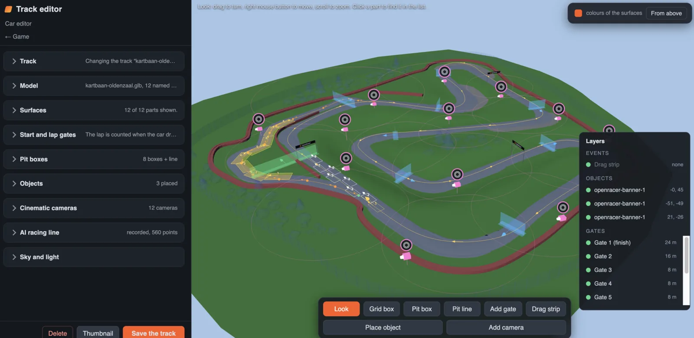
- Model. Pick the glb. The parts are listed with a guess of their surface from their names. Click a part in the view to find it, change the surface per part or for all parts that match the filter. Colours of the surfaces shows what you set.
- Grid and gates. Grid box: click on the road and drag in the direction the car faces; box 1 is the start of the player, 2 to 8 are for the opponents. Add gate works the same. Gate 1 at the start puts the finish line just in front of the start.
- Pits. Pit box places a box of 4 by 8 m per car, and Pit line the path of the AI to its box.
- Drag strip and cameras. Drag strip places the start line, the direction and the distance of a drag strip. Add camera places a camera for the Cinematic view of the replay.
- AI racing line. Record AI racing line opens the game on this track; you drive a lap and Esc saves it.
- Sky and light. Colours or a picture of the sky, fog, and the direction, height, strength and colour of the sun, with a live preview.
- Save the track. It is written to
tracks/<id>/and is in the menu. Choose a track in the list to change it, or to delete it.
Parts the car drives on have to be separate parts of the model for the surface to be set per part. Split the road only when you want different grip on pieces: laps are counted with gates.
Drawing a track
New track in the editor starts a design without a model: a smooth closed loop through nodes.
- Nodes. Click on the ground to add a node between the two it is nearest to. Drag a node to move it, and its arrow up or down for hills. Every node has a width.
- The road gets red and white kerbs and grass beside it. The ground is a landscape that joins the shoulders: under the road just below the lowest road nearby (a road that crosses another becomes a bridge), further away it follows the road and rolls gently.
- Prefabs. Walls, barriers, tyre stacks and walls, cones, trees, bushes, houses, a grandstand, lamp posts and signs. Click to put one down, or drag a line to make a row that follows it. A prefab sits on whatever is under it. A single one has a ring to turn it.
- Textures. Everything has a tileable texture (asphalt, concrete, gravel, grass, dirt, sand, brick, plaster, roof tiles, wood, metal, rubber, leaves, bark), tiled in metres so it repeats seamlessly on any length of road or wall.
- Keys. Delete removes the selection, Ctrl+D duplicates, Ctrl+Z and Ctrl+Shift+Z undo and redo, Esc deselects.
Saving writes the track as a glb (with the textures in it as JPEG) plus the design itself in track.json, so it can be opened and changed again. The game loads it like any glTF track. Walls, houses and trees are scenery (the car hits them); bushes, cones and signs are decor.
Your own cars and tracks
The game can be hosted as plain files, with the cars and tracks of the server as the set that comes with it. Players add their own on their side, in the Garage of the main menu, and nothing is uploaded to the server. The Garage has Load (open a car or track in its editor), New (a new car or track) and Import (a zip). Three sources make the lists of the menu: the server, the garage (the browser's IndexedDB), and a folder on the PC. A car or track of the garage replaces the one of the server with the same id, so a tuned copy of a standard car keeps its id and its lap records. Items that are not of the server have a badge in the menu.
- Saving. The editors save through the helper server when it has the API, and otherwise to the garage, and say which.
- Zip. A car or track is exported as
<id>.car.zipor<id>.track.zip, and a zip is imported the same way, so a zipped folder fromcarsortracksworks too. - A folder on the PC. In Chrome and Edge a folder can be linked. Its cars and tracks are read every time the menu opens and nothing is copied. The browser asks once per session to allow reading it.
- Space. The dialog shows how much the browser lets the site keep. Safari keeps about a gigabyte and forgets it after seven days without a visit, so export what matters.
Blender settings
The game and Blender light a car differently, so a car never looks exactly the same, but it can come close.
- Materials: use the Principled BSDF with the inputs glTF has. Other shaders do not survive the export; set them right in the car editor.
- Colour management: the game shows colours as they come (Standard) unless Tone mapping is set. Use the same in Blender. Look None, gamma 1; the game brightens by 20 % at the end.
- Lighting: save the surroundings in the game (Esc → Tools → Surroundings for Blender) and use the HDR as the world, then add the lights of the game.
- Render engine: EEVEE, without screen space reflections, bloom and ambient occlusion, with soft shadows.
- The car: y up, forward along +Z, the wheels as separate named parts.
tools/blender_match_game.py does all of this. Open the Scripting workspace, set HDRI to the saved file and run it. It was tested with Blender 5.1.
Code and licence
The game uses three.js r186, vendored in web/js/three. It is an ES module, so web/js/bootstrap.js imports it, exposes it as THREE and loads the other scripts in order. The old JSON car models are converted by parseLegacyModel. The editors are ES modules with an import map.
OpenRacer is released under the GPLv3 licence. The original project is by Chris Barnard (digi-chris/OpenRacer); this fork, developed with the AI models Claude Fable and Claude Sonnet 5.5, is at WeArtStudioNL/openracer-agent-port. The engine sound is a port of parts of engine-sim (MIT).
Changelog
2.2.0 (October 2026)
- Soft body and damage: every car is a shell of nodes and beams that dents, parts come loose on hinges or fall off, wheels bend or come off, and cars dent each other. Damage can be switched off; Backspace repairs. See Soft body and damage.
- Motorcycles with a rider who leans and moves on the bike, and a ragdoll crash. See Motorcycles.
- Weather and time of day: clear, cloudy, fog, rain and snow, from dawn to night, with a wet or snowy road that grips less. See Weather and time of day.
- A new main menu in steps: the way to play, the car and its setup, the track, the weather, the race and the opponents.
- Drag strip with a tree of lights, a time slip and a Top 50. See Drag strip.
- Replays in a library, takes, and a video editor. See Replay.
- Engine builder and dyno in the car editor and the tuning menu, and setups saved under a name; a car can bring its own setups (Setups).
- New gearboxes: IMT, AMT, dual clutch, torque converter and CVT, with ready-made transmissions.
- The tyre is a shell of nodes, and the 2D physics is gone.
- New cars and tracks: the Hyundai i30, two karts, the OpenRacer Muscle, the stadium truck, two motorcycles; the Desert, Kartbaan Oldenzaal and TT Assen. The Mustangs are gone.
2.1.0 (19 October 2026)
- Replay: everything is recorded from the start, and Esc, Replay plays it back with a slider, rewind, pause, play and speeds from 0.1× to 5×. See Replay.
- Cameras in the replay: Fixed, Follow, Cockpit and a Free camera with smoothing, mouse look, zoom, aim at the car and fix to the car.
- Save and share: a replay is saved as a file and opened from the main menu; nothing goes to a server.
- Fixes: the end and the sides of a ramp were walls for a car above them; the sky trembled; an error while a game was loading.
2.0.1 (19 October 2026)
- Touch controls for phones and tablets, and a phone no longer runs out of memory.
- A new version reaches the player at once, and the helper server, the names in the menus and the site have been made safer.
2.0.0 (19 October 2026)
- The fork as a new version: the driving model, races with AI, ghost and records, wheels with force feedback, the car and track editors, the tuning menu, the skidpad and the local garage.
The full list is in CHANGELOG.md on GitHub.